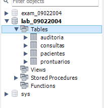
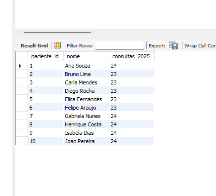
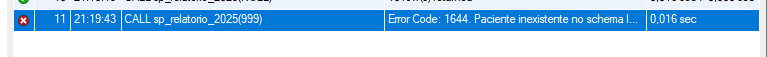
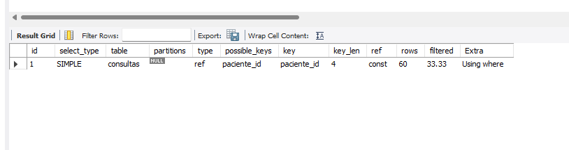
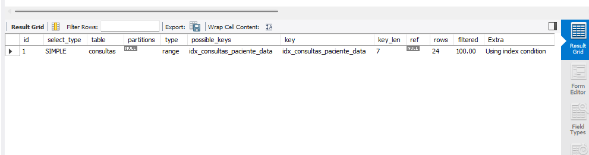

1. Ambiente MySQL
Todo o SQL foi criado e testado em MySQL Community Server 8.4 rodando localmente (Windows), acessado pelo MySQL Workbench. Nenhuma senha é exposta neste site.
| Item | Valor |
|---|---|
| SGBD | MySQL 8.4.9 (local) |
| Cliente | MySQL Workbench 8.0 CE |
| Schema | lab_09022004 |
2. Schema e tabelas 4 tabelas + FKs
Schema lab_09022004 com chaves primárias em todas as tabelas e
duas chaves estrangeiras (consultas.paciente_id → pacientes.id e
prontuarios.consulta_id → consultas.id). Populado com
10 pacientes e 600 consultas.
| Tabela | Colunas |
|---|---|
pacientes | id, nome, cpf, data_nasc |
consultas | id, paciente_id (FK), data_consulta, especialidade |
prontuarios | id, consulta_id (FK), observacao |
auditoria | id, tabela, operacao, registro_id, usuario, criado_em |

lab_09022004 e as 4 tabelas no navegador do Workbench.
(salve o arquivo como assets/schema-workbench.png)3. Grupo A — Stored Procedure com cursor + SIGNAL testado
A procedure sp_relatorio_2025 percorre os pacientes com um
cursor e conta, para cada um, as consultas de 2025. Se receber um
paciente_id inexistente, lança SIGNAL SQLSTATE '45000'.
DELIMITER //
CREATE PROCEDURE sp_relatorio_2025(IN p_paciente_id INT)
BEGIN
DECLARE v_done INT DEFAULT 0;
DECLARE v_id INT; DECLARE v_nome VARCHAR(100);
DECLARE v_qtd INT; DECLARE v_existe INT DEFAULT 0;
DECLARE cur CURSOR FOR
SELECT id, nome FROM pacientes
WHERE p_paciente_id IS NULL OR id = p_paciente_id ORDER BY id;
DECLARE CONTINUE HANDLER FOR NOT FOUND SET v_done = 1;
IF p_paciente_id IS NOT NULL THEN
SELECT COUNT(*) INTO v_existe FROM pacientes WHERE id = p_paciente_id;
IF v_existe = 0 THEN
SIGNAL SQLSTATE '45000'
SET MESSAGE_TEXT = 'Paciente inexistente no schema lab_09022004';
END IF;
END IF;
DROP TEMPORARY TABLE IF EXISTS tmp_rel;
CREATE TEMPORARY TABLE tmp_rel (paciente_id INT, nome VARCHAR(100), consultas_2025 INT);
OPEN cur;
read_loop: LOOP
FETCH cur INTO v_id, v_nome;
IF v_done THEN LEAVE read_loop; END IF;
SELECT COUNT(*) INTO v_qtd FROM consultas
WHERE paciente_id = v_id AND YEAR(data_consulta) = 2025;
INSERT INTO tmp_rel VALUES (v_id, v_nome, v_qtd);
END LOOP;
CLOSE cur;
SELECT * FROM tmp_rel ORDER BY paciente_id;
DROP TEMPORARY TABLE IF EXISTS tmp_rel;
END //
DELIMITER ;
-- Teste OK: CALL sp_relatorio_2025(NULL); -- lista todos
-- Teste ERRO: CALL sp_relatorio_2025(999); -- dispara o SIGNAL
CALL sp_relatorio_2025(NULL) lista os 10 pacientes
com a contagem de consultas de 2025.
CALL sp_relatorio_2025(999) dispara
Error Code 1644 — Paciente inexistente.4. Grupo B — Índice composto + EXPLAIN obrigatório
Consulta que filtra consultas por paciente_id e
data_consulta. Comparação do plano antes e depois do índice composto.
-- consulta analisada
EXPLAIN SELECT id, especialidade FROM consultas
WHERE paciente_id = 1 AND data_consulta >= '2025-01-01';
-- índice composto (ordem: igualdade primeiro, faixa depois)
CREATE INDEX idx_consultas_paciente_data
ON consultas (paciente_id, data_consulta);Antes do índice
type: ref
key: paciente_id (índice da FK)
rows: 60
filtered: 33.33%
Extra: Using where
Depois do índice
type: range
key: idx_consultas_paciente_data
rows: 24
filtered: 100%
Extra: Using index condition
5. Reflexão
O índice composto foi usado. Confirmei pela coluna key
do EXPLAIN, que passou de paciente_id (o índice implícito criado pela
chave estrangeira) para idx_consultas_paciente_data. O type
mudou de ref para range e as linhas estimadas caíram de
60 para 24, com filtered subindo de 33% para 100%. Isso mostra que o
índice composto (paciente_id, data_consulta) resolve os dois filtros
(paciente e faixa de data) de uma vez, em vez de filtrar as datas linha a linha.
A ordem das colunas segue o WHERE: igualdade primeiro, faixa depois.